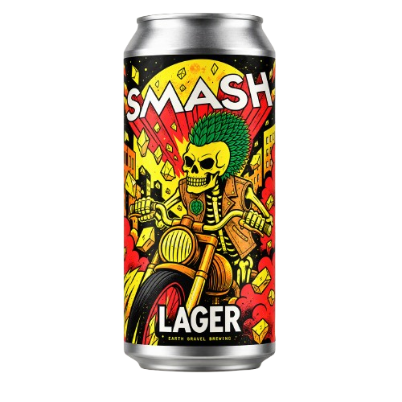
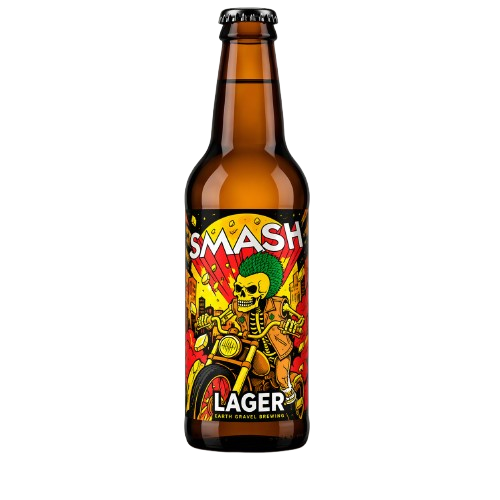
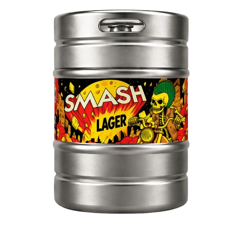
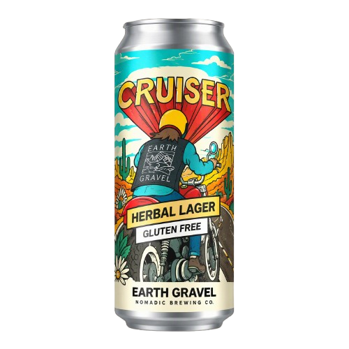
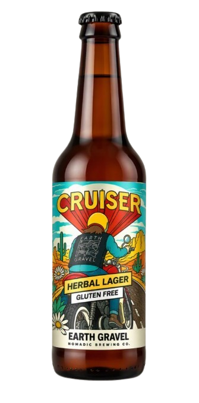
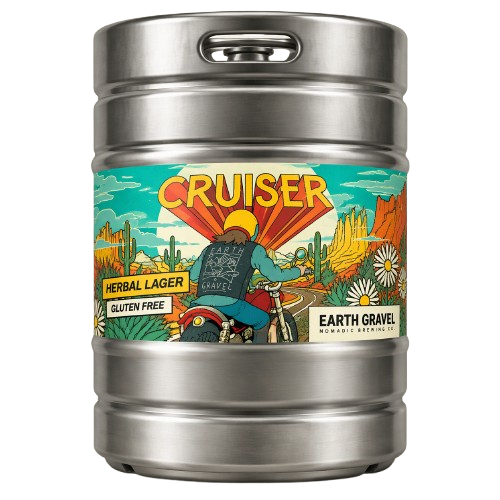
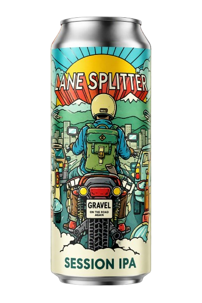
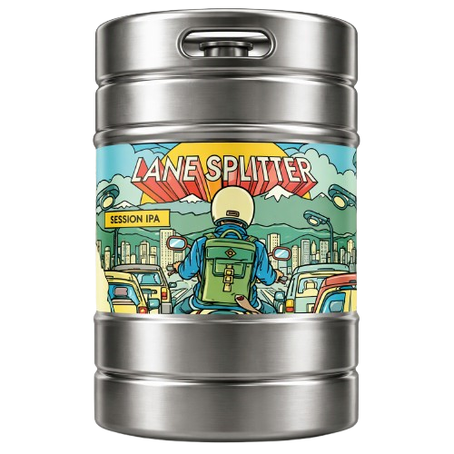

.png)
.png)
.png)
EARTH GRAVEL
BOLD FLAVORS. CLEAN LINES.
UNEXPECTED BREWS.
Smash
Lager
Μια δροσερή και ευκολόπιοτη lager με έντονα αρωματικά χαρακτηριστικά πεπονιού και ροδάκινου. Ισορροπημένη, καθαρή και αναζωογονητική, ιδανική για κάθε στιγμή. Συνδυάζει την κλασική καθαρότητα μιας lager με φρουτώδη φρεσκάδα, προσφέροντας ένα ευχάριστο και απρόσμενο προφίλ γεύσης.
A crisp, refreshing lager with bright fruit character of melon and peach. Balanced, clean and invigorating, perfect for any occasion. Combining the classic smoothness of a lager with a fruity freshness, it delivers a pleasant and unexpected flavor profile.

CAN500ml
BOTTLE330ml
ΒΑΡΕΛΙ30 λίτρωνEARTH GRAVEL
BOLD FLAVORS. CLEAN LINES.
UNEXPECTED BREWS.
Cruiser
Herbal Lager
Μια ήπια, βοτανική lager για ατέλειωτες βόλτες. Απαλή και ευκολόπιοτη, με χαμομήλι και λουίζα που δίνουν δροσερό, λουλουδάτο χαρακτήρα. Χωρίς γλουτένη και ιδανική ακόμα και για όσους δεν πίνουν μπύρα.
A smooth, easy-drinking herbal lager with chamomile and lemon verbena (louiza). Gluten free and made for everyone, even those who don’t usually drink beer.

CAN500ml
BOTTLE330ml
ΒΑΡΕΛΙ20 / 30 λίτρωνΣΥΣΤΑΤΙΚΑ: ΒΥΝΗ ΚΡΙΘΑΡΙΟΥ, ΝΙΦΑΔΕΣ ΡΥΖΙΟΥ, ΝΙΦΑΔΕΣ ΣΙΤΟΥ, ΛΥΚΙΣΚΟΣ, ΛΟΥΙΖΑ 0,01%, ΧΑΜΟΜΗΛΙ 0,015%, ΜΑΓΙΑ.
Ingredients: Barley malt, rice flakes, wheat flakes, hops, verbena 0.01%, chamomile 0.015%, yeast.
Ποτό με βάση την μπύρα. Αφιλτράριστο. Διατηρείται στο ψυγείο.
Beer-based beverage. Unfiltered. Keep refrigerated.
Attica Brewery · Keratea Industrial Park, Attica 19001
EARTH GRAVEL
BOLD FLAVORS. CLEAN LINES.
UNEXPECTED BREWS.
Lane Splitter
Session IPA
Session IPA με αισθητή πικράδα και πολύ καλό σώμα, παρά το χαμηλό αλκοόλ. Έντονα τροπικά αρώματα, και παρόλα αυτά ευκολόπιοτη, για να περνάς από τη μία γουλιά στην επόμενη χωρίς κόπο.
A session IPA with a clear bitterness and surprisingly full body for its low ABV. Bursting with tropical fruit, yet effortlessly drinkable.

CAN500ml
ΒΑΡΕΛΙ20 / 30 λίτρωνΣΥΣΤΑΤΙΚΑ: ΝΕΡΟ, ΒΥΝΗ ΚΡΙΘΑΡΙΟΥ, ΝΙΦΑΔΕΣ ΒΡΟΜΗΣ, ΛΥΚΙΣΚΟΣ, ΜΑΓΙΑ.
Ingredients: Water, barley malt, flaked oats, hops, yeast.
Αφιλτράριστη & απαστερίωτη μπύρα. Διατηρείται στο ψυγείο.
Unfiltered & unpasteurized beer. Keep refrigerated.
Metamorphosis Microbrewery P.C. · Chlois 87, Metamorphosi, Attica 14452
EARTH GRAVEL
BOLD FLAVORS. CLEAN LINES.
UNEXPECTED BREWS.
Ποιοι είμαστε
Nomadic Brewing Co. · “Gypsy Brews”
Νομαδική εταιρεία ζυθοποίησης, γεννημένη από το προσωπικό όνειρο του Χρήστου Δασκαλόπουλου: Certified Cicerone και ζυθοποιού, με πάνω από 10 χρόνια στον χώρο της μπίρας, στην Ελλάδα και στο εξωτερικό. Την οδηγεί η αγάπη και ο σεβασμός για την μπίρα, τις γεύσεις και την ιστορία της, μαζί με την αγάπη για εξερεύνηση, ελευθερία και ίση αντιπροσώπευση, είτε μιλάμε για συνταγές, είτε για μηχανές και ταξίδια, είτε για τον άνθρωπο ως καταναλωτή και μέλος της κοινωνίας.
Αποστολή
Δημιουργούμε σταθερά συνταγές χαμηλές σε αλκοόλ και ευκολόπιοτες, χωρίς να χάνουν σε γεύση και σώμα, δίνοντας το max σε κάθε εμπειρία που συνοδεύουν.